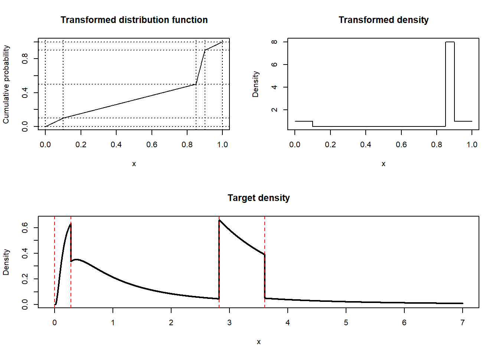
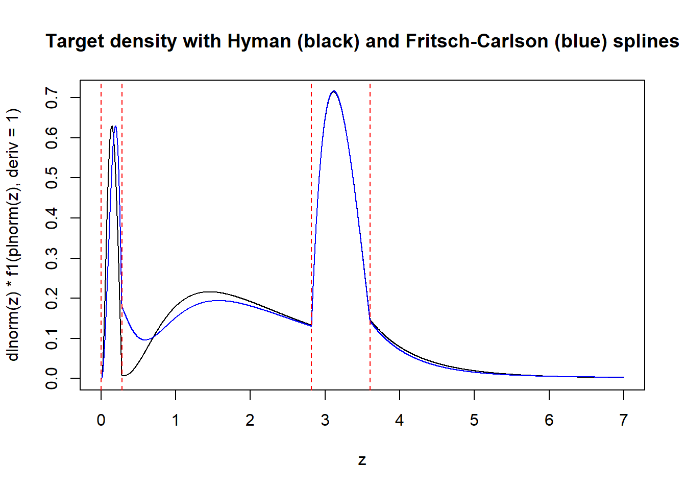
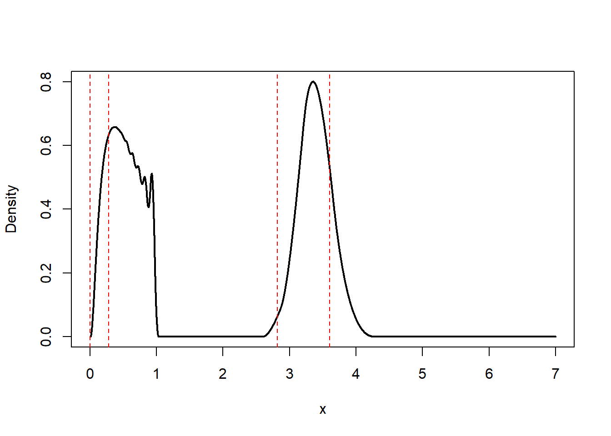
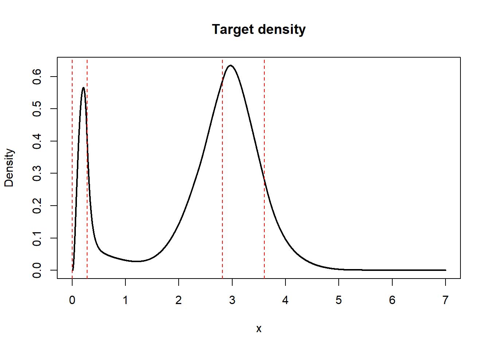
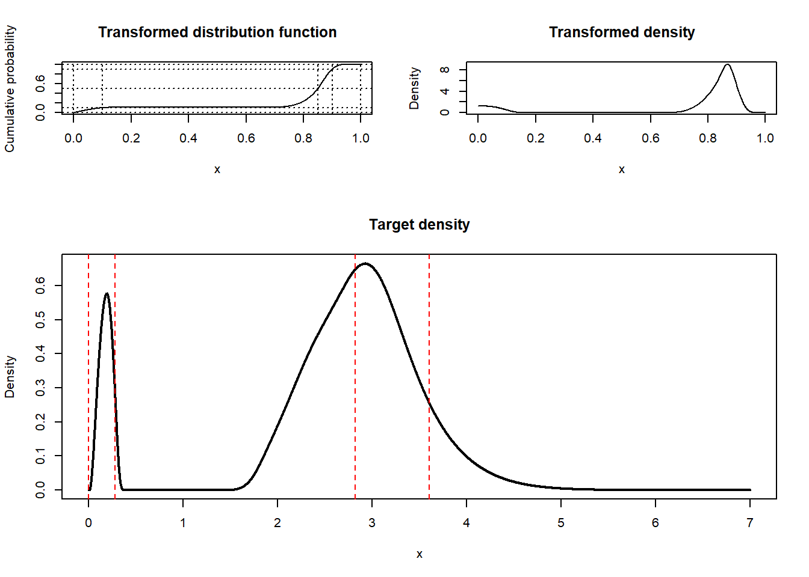
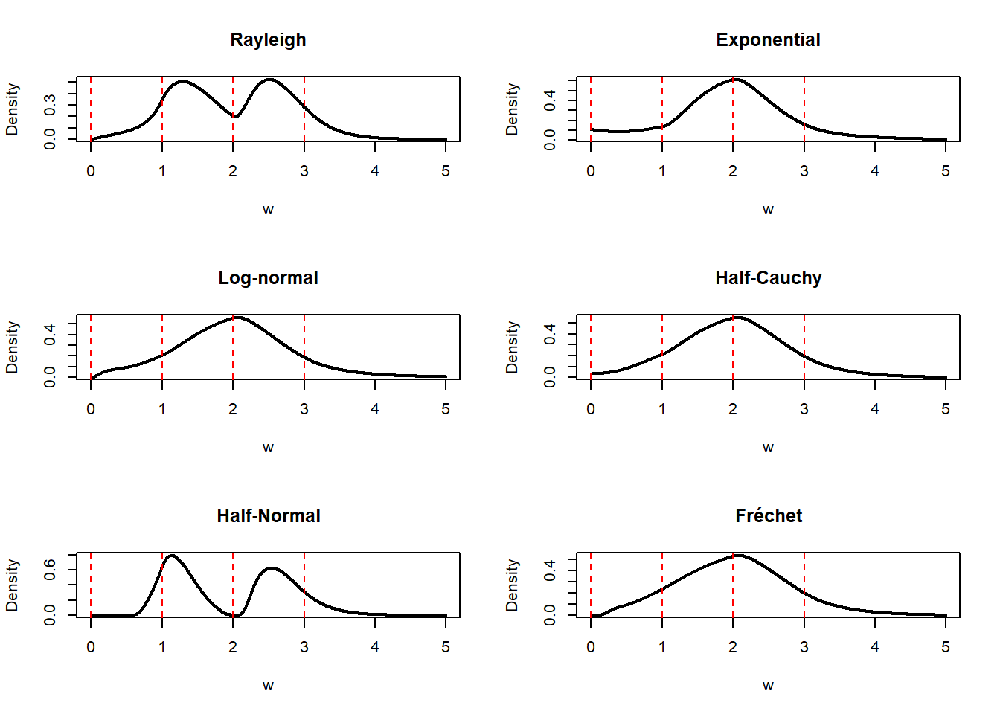

1 Summary
- Good methods for eliciting densities from quantiles should satisfy six conditions.
- I propose a class of method for constructing densities for quantiles based on transformations and penalized monotone B-splines. It satisfies 3 or 4 of the conditions with appropriate tweaking.
- Some of the weaknesses of my proposed method may be ameliorated. I make some suggestions about how to do this.
- There are infinitely many ways to translate quantiles to densities. I sketch another one at the end.
2 Introduction
While doing Fermi estimation (“guesstimation”) you often want to construct a distribution from quantile knowledge. Dealing with two quantiles is quite easy, as you have plenty of distribution families that are easy to fit. Location-scale families, such as the normal distribution, logistic distribution, Cauchy distribution, or the shifted exponential distribution are particularly easy to fit. Moreover, a monotonically transformed location-scale distribution is equally easy to work with, e.g. the log-normal and log-logistic distributions.
A variable \(Y\) belongs to a location-scale family of distributions if it can be written on the form \(Y=\mu+\sigma X\). If \(F\) is the distribution function \(X\), then \(F\left(\frac{y-\mu}{\sigma}\right)\) is the distribution function of \(Y\), as \[P(Y\leq y) = P(\mu+\sigma X\leq y) = P(X\leq(y-\mu)/\sigma) = F\left(\frac{y-\mu}{\sigma}\right).\]
We also find that the quantile function of \(Y\) equals \(Q_Y(p)=\mu+\sigma Q(p)\), where \(Q\) is the quantile function of \(X\).
We can derive \(\mu\) and \(\sigma\) by matching quantiles: \[\begin{eqnarray*} q_{1} & = & \mu+\sigma F^{-1}(p_{1}),\\ q_{2} & = & \mu+\sigma F^{-1}(p_{2}). \end{eqnarray*}\]
If \(g\) is a strictly increasing transformation then \(Y=g(\mu + \sigma X)\) is a transformed location-scale distribution. You can derive its quantiles in the same way as you would a location-scale distribution, just be sure to apply \(g^{-1}\). Usually \(g=\exp\) and \(X\) is normal, yielding the log-normal distribution.
But what do we do with more than two quantiles? We could fit a \(k\)-parameter distribution, but there are few canonical densities to choose from with \(k>2\) parameters. And it’s hard to justify your choice in any case. For two (or one) parameters, the normal distribution can often be justified for data on \([-\infty, \infty]\) based on the central limit theorem; likewise, the log-normal can be justified based on a product argument – and the exponential and half-normal with their own reasoning methods. Three or more though? There’s just no standard way to do it.
3 What would we like?
How should we go about deciding on a class of distribution to fit quantiles to? Here are 6 conditions I like.
- Control of tail behavior. The exact shape of the distributions “in the middle” – where we are likely to have the strongest intuitions – often doesn’t matter too much. If we’re dealing with, say, insurance, having control of the tails is just as important as fine-grained control over how the curve looks in the center.
- Good looks. This is a vague requirement, but can probably be replaced with the almost equally vague requirement of the densities being smooth. Smoothness is not just about aesthetics, as we expect the best predictive densities to be smooth, with continuous second derivatives at the very least. We would also like to avoid multimodality when possible. It’s easy to make densities with bad looks, and severe discontinuities, see e.g. Figure 2. We don’t want those
- Principled derivation. We do not want the densities to be ad-hoc but derived using sound principles such as maximum entropy. It’s not trivial to combine this with the good-looks demand, as maximum entropy + quantile information yields discontinuous densities!
- Bounded away from \(0\). We don’t want out densities to be \(0\) at arbitrary places! See Figure 6 for an example of such bad behavior.
- Easy to sample from. Especially relevant for Squiggle applications.
- Quick to calculate, cheap to store, etc. We always want convenience, but it’s hard to say as an outsider what is most important! Quick computation would matter for interfaces used by products such as Metaculus.
How can you construct densities that match aribtrary quantiles? The most obvious starting points arew mixture distributions and quantile mixtures.
Mixture distributions can be written on the form \(G(x) = \sum_i^n \lambda_i F_i(x, \theta_i)\) for a collection of parameterized basis distributions \(F_i(x;\theta_i)\). By making \(n\) big enough and \(F_i(\theta_i)\) sufficiently flexible, we can match any quantile to it. The most famous member of this family are normal mixtures. Mixture distributions have been studied a lot. There might be reasonably simple iterative methods to fit mixtures of location-scale distributions, but it seems hard, as the quantile function has no closed form. But different forms of “basis distributions” can be fitted quite easily, at least on \([0,1]\). Perhaps best known among these are the Bernstein polynomials (themselves special instances of the Beta distribution), which will fit any distribution arbitrarily well in the limit by the Weierstrass approximation theorem. Another good option is to use splines, which can be constrained to be positive and increasing without too much difficulty.
Quantile-parameterized distributions have their quantile distributions written on the form \(Q(x) = \sum_i^n \lambda_i q_i(x; \theta_i)\) instead. This class of distributions purportedly includes the metalog distribution with its bloated wikipedia page, but in reality they require minor a conceptual modification to fit into the framework, as its component are not bona fide quantile functions. In principle, such “quantile mixtures” can be matched to any quantile using non-negative least squares, provided the basis quantiles are flexible enough. This is entirely feasible to do – provided the domain of the vaiables are bounded on \([0,1]\), using them same methods as we would use for fitting cumulative distribution functions. For quantile functions and distributions functions on \([0,1]\) are the same thing - increasing and positive functions bounded by \([0,1]\), so we have freedom in choosing which to model.
Since it is possible to fit easily fit quantiles on the unit interval the following strategy, as illustrated in Figure 1, sounds promising:
- Start out with a base distribution, such as the log-normal, with distribution function \(F\), and density function \(f\). Then transform the quantiles \(q=q_{1},q_{2},\ldots,q_{k}\) to the unit interval using \(F\); call the transformed quantiles \(x\) and the associated probabilities \(y\). We can then use these quantiles to construct a distribution \(S\) (and associated density \(s\)) on the unit interval with the desired quantiles.
- Fit the quantiles on the unit interval. We will look at the piecewise linear approximation, monotone interpolating splines, and penalized monotone B-splines. The penalized monotone B-splines is the only promising approach.
- Transform the fitted distribution back, using the quantile function. This yields the density \(g(x)=f(x)s(F(x))\), cumulativedistribution function \(G(x)=S(F(x))\), and quantile function \(G^{-1}(x)=F^{-1}(S^{-1}(x))\).
flowchart TD B([Quantiles]) --> C A([Base \n distribution])-->C[Transformed \n quantiles] D([Method to create\n distribution on\n unit interval]) --> E[Distribution on\n unit interval] C --> E A --> F[Final distribution] E --> F[Final distribution]
Let’s take a look at the piecewise linear approach and the monotone interpolating splines to see why they are not promising.
3.1 Piecewise linear
Our base distribution is the log-normal.
p <- plnorm; d <- dlnorm; q <- qlnormThe quantiles are semi-randomly chosen to be as follows
qq <- c(0, q(0.1), q(0.85), q(0.9), Inf)
y <- c(0, 0.1, 0.5, 0.9, 1)
x <- p(qq)
round(qq, 2)[1] 0.00 0.28 2.82 3.60 InfI’ll use the log-normal base distribution and these quantiles throughout this post.
The piecewise linear approximation and its associated histogram can be calculated using splines.
Function to the piecewise linear approximation and its associated histogram. The implementation was fast to write, but there are more efficient implementations available.
piecewise <- function(x, y) {
sf <- \(y,...) splines2::iSpline(
y,
intercept = TRUE,
knots = x[2:(length(x) - 1)],
degree = 0,
Boundary.knots = c(x[1], x[length(x)]),
...)
xmat <- sf(x)
coefs <- nnls::nnls(A = xmat, b = y)$x
pdf_untrans = \(w) sf(w, derivs = 1) %*% coefs
cdf_untrans = \(w) sf(w) %*% coefs
list(
x = x,
y = y,
pdf = \(w, d = dunif, p = punif) d(w) * pdf_untrans(p(w)),
cdf = \(w, p = punif) cdf_untrans(p(w))
)
}The resulting distribution, density, and target density can be seen below.
Code for plotting the piecewise linear CDF and PDF on the transformed scale and the PDF on the untransformed scale.
obj <- piecewise(x, y)
layout(matrix(c(1,2,3,3, 3, 3), nrow = 3, ncol = 2, byrow = TRUE),
heights = c(3, 2))
z <- seq(0, 1, by = 0.001)
plot(z, obj$cdf(z), ylim = c(0, 1), type = "l", ylab = "Cumulative probability", xlab = "x",
main = "Transformed distribution function")
abline(h = y, v = x, lty = 3)
plot(z, obj$pdf(z), type = "l", ylab = "Density", xlab = "x",
main = "Transformed density")
w <- seq(0, 7, by = 0.001)
plot(w, obj$pdf(w, d, p), type = "l", lwd = 2, ylab = "Density", xlab = "x",
main = "Target density")
abline(v = q(x), lty = 2, col = "red")
The target density is discontinuous.
3.2 Monotone interpolation splines
Monotone interpolation splines are used to interpolate a sequence of points with a monotone function. There are two variants implemented in R, the Hyman (1983) splines and the Fritsch–Carlson (1980) splines. Both yield functions with continuous first derivative. Since we’re fitting the cumulative distribution function, this guarantees that the density function is continuous.
Code for Hyman splines and Fritsch–Carlson splines
f1 <- splinefun(x, y, method = "hyman")
f2 <- splinefun(x, y, method = "monoH.FC")
z <- seq(0, 7, by = 0.001)
plot(z, dlnorm(z) * f1(plnorm(z), deriv = 1), type = "l",
main = "Target density with Hyman (black) and Fritsch-Carlson (blue) splines")
lines(z, dlnorm(z) * f2(plnorm(z), deriv = 1), type = "l", col = "blue")
abline(v = q(x), lty = 2, col = "red")
Both methods yield ugly target densities, probably because the resulting interpolating splines only have continuous first derivatives, not continuous second derivatives (as most cubic splines have). Moreover, the Hyman method yields a density that fails to be bounded away from \(0\). Since there is no obvious way to fix these splines, I’m moving on to another method.
4 Fitting monotone B-splines with penalties
Recall that \(x_i\) are the transformed quantiles. We need to find and \(F\) that satisfies \(F(x_i) = y_i\). Since this isn’t enough to identify the \(F\), we can try minimize the squared distance between \(F\) and the identity function \(\iota\) defined by \(\iota(x) = x\) for some function class \(\mathcal{F}\) that is contained in the set of increasing functions. \[\min_{F(x_{i})=y_{i},F\in\mathcal{F}}\|F-\iota \|^2 \tag{1}\]
My choice of \(\mathcal{F}\) is the set of monotone B-splines with \(m\) uniformly spaced internal knots and boundary knots at \(0\) and \(1\). These splines are most likely guaranteed to interpolate your quantiles when \(m\) is large enough, but I don’t know the details. The result is a quadratic program with linear constraints; see the code in Section 4.1. (I can add mathematical details upon request.)
When using splines of degree \(3\) and \(m = 40\) on the quantiles \(x\) introduced above, we get the following result.

The second bump looks beautiful and smooth! But the first bump is to irregular, lacking smoothness at its end and going up and down too much. Moreover, the density is \(0\) almost all the way from \(0\) to \(3\), which we typically do not want.
To fix the smoothness problems we add a penalty term for the integrated squared second derivative together with a parameter \(\lambda\) regulating the influence of the penalty term. (Just like the \(\lambda\) in ridge regression regression). To fix \(0\) problem, we add a penalty term to the integrated squared first derivative, parameterized by \(\mu\). Both of these terms can be added to the quadratic implied by Equation 1.
4.1 The fitter function
The R function below fits the splines using the arguments \(m\) (number of knots), the degree of the B-splines (degree), \(\lambda\) (the penalty for the second derivative), \(\mu\) (the penalty for the first derivative).
The fitter functions and its helpers.
#' Fits a density to quantiles.
#'
#' The method is based on monotone splines. We minimize the squared distance
#' between the spline approximation and the identity function. Thus you
#' minimize the distance between the CDF and the uniform CDF in a
#' q-transformed space. The parameters `lambda` and `mu` are to tweak the
#' resulting density into the desired shape.
#'
#' The function returns
#' @param x,y Vector of probabilities (`x`) and quantiles (`y`). The quantiles
#' must have been transformed to the unit interval using your desired `q`.
#' @param m Number of internal knots in the spline.
#' @param degree Degree of the spline function. Defaults to `3`, which
#' corresponds to cubic splines.
#' @param lambda The penalty term for the squared second derivative.
#' @param mu The penalty term for the squared derivative.
#' @return A list containing the fitted spline together with density functions,
#' and so on.
fitter <- function(x, y, m = 20, degree = 3, lambda = 0.5, mu = 0) {
knots <- (2:m) / (m + 1)
boundary_knots <- c(y[1], y[length(y)])
sf <- \(x, derivs = 0) splines2::bSpline(
x,
intercept = TRUE,
knots = knots,
degree = degree,
Boundary.knots = boundary_knots,
derivs = derivs
)
matrices <- get_penalties(knots, boundary_knots, degree)
x_mat <- sf(x)
f <- Vectorize(\(x, i) x * sf(x)[i])
k <- ncol(x_mat)
sx <- sapply(seq(k), \(i) integrate(f, lower = 0, upper = 1, i = i)$value)
constraints <- increasing(ncol(x_mat) - 1)
fit <- quadprog::solve.QP(
Dmat = matrices$s2_mat + lambda * matrices$p_mat + mu * matrices$p1_mat,
dvec = sx,
Amat = t(rbind(x_mat, constraints$amat)),
bvec = c(y, constraints$bvec),
meq = length(y)
)
coefs <- fit$solution
pdf_untrans = \(w) sf(w, derivs = 1) %*% coefs
cdf_untrans = \(w) sf(w) %*% coefs
list(
x = x,
y = y,
m = m,
degree = degree,
lambda = lambda,
mu = mu,
fit = fit,
pdf = \(w, d = dunif, p = punif) d(w) * pdf_untrans(p(w)),
cdf = \(w, p = punif) cdf_untrans(p(w))
)
}
#' Get penalty matrices for the fitter.
#' @param knots The internal knots.
#' @param boundary_knots The boundary knots.
#' @param degree Degree of the B-spline.
#' @return List of penalty matrices.
get_penalties <- function(knots, boundary_knots, degree) {
basis_obj <- fda::create.bspline.basis(
rangeval = boundary_knots,
norder = degree + 1,
breaks = c(boundary_knots[1], knots, boundary_knots[2])
)
inds <- seq(basis_obj$nbasis)
list(
s2_mat = fda::bsplinepen(basis_obj, Lfdobj = 0)[inds, inds],
p_mat = fda::bsplinepen(basis_obj, Lfdobj = 2)[inds, inds],
p1_mat = fda::bsplinepen(basis_obj, Lfdobj = 1)[inds, inds]
)
}
#' Increasing constraints matrix and vector
#'
#' @keywords internal
#' @param m The number of knots in the spline.
#' @param intercept If `TRUE`, the model includes an intercept.
#' @return The increasing constraint matrix.
increasing <- function(m, intercept = TRUE) {
amat <- cbind(0, -cbind(diag(m - 1), 0) + cbind(0, diag(m - 1)))
amat <- rbind(0, amat)
amat <- rbind(amat, 0)
amat[m + 1, c(1, m + 1)] <- -1
amat[1, 2] <- 1
amat <- rbind(0, amat)
amat[1, 1] <- 1
if (!intercept) {
amat <- amat[2:nrow(amat), 2:ncol(amat)]
}
bvec <- rep(0, nrow(amat))
bvec[nrow(amat)] <- -1
list(
amat = amat,
bvec = bvec
)
}4.2 Fixing the density
Using \(m = 40\), a degree of \(3\), \(\lambda = 0.01\), and \(\mu = 5\) fixes Figure 4.
Constructing and plotting a monotone B-spline with a good penalization.
obj <- fitter(x, y, m = 40, degree = 3, lambda = 0.01, mu = 5)
w <- seq(0, 7, by = 0.001)
plot(w, obj$pdf(w, d, p), type = "l", lwd = 2, ylab = "Density", xlab = "x",
main = "Target density")
abline(v = q(x), lty = 2, col = "red")
This example suggests that the penalized monotone B-spline method can be good-looking, avoid the 0 problem, control the tail behavior, and be at least reasonably quick to calculate (as quadratic programs of this small size are fast to solve). I’m not sure how easy they will be to sample from though, and I’m even less sure they have a principled derivation. But their biggest problem is parameter tuning.
We can reintroduce the \(0\) problem by modifying \(\lambda\). Setting \(\lambda = 0.03\) instead of \(\lambda = 0.01\) gives us the following. It appears that smoothing too much reintroduces the \(0\) problem. I’m not sure why though.
Constructing and plotting a monotone B-spline with a bad penalization.
obj <- fitter(x, y, m = 30, degree = 4, lambda = 0.03, mu = 5)
layout(matrix(c(1,2,3,3,3,3), nrow = 3, ncol = 2, byrow = TRUE))
z <- seq(0, 1, by = 0.001)
plot(z, obj$cdf(z), ylim = c(0, 1), type = "l", ylab = "Cumulative probability", xlab = "x",
main = "Transformed distribution function")
abline(h = y, v = x, lty = 3)
plot(z, obj$pdf(z), type = "l", ylab = "Density", xlab = "x",
main = "Transformed density")
w <- seq(0, 7, by = 0.001)
plot(w, obj$pdf(w, d, p), type = "l", lwd = 2, ylab = "Density", xlab = "x",
main = "Target density")
abline(v = q(x), lty = 2, col = "red")
4.3 Changing the base distributions
The choice of base distribution has a big effect on the target distribution. Figure 7 shows an example.
Plotting many target densities.
plotter <- function(d, p, q, main) {
x <- p(c(0, 1, 2, 3, Inf))
y <- c(0, 0.1, 0.5, 0.9, 1)
obj <- fitter(x, y, m = 90, degree = 5, lambda = 0.1, mu = 5)
w <- seq(0, 5, by = 0.001)
plot(w, obj$pdf(w, d, p), type = "l", lwd = 2, ylab = "Density",
main = main)
abline(v = q(x), lty = 2, col = "red")
}
layout(matrix(c(1,2,1,2,3,4,3,4,5,6,5,6), nrow = 6, ncol = 2, byrow = TRUE))
plotter(extraDistr::drayleigh, extraDistr::prayleigh, extraDistr::qrayleigh, main = "Rayleigh")
plotter(dexp, pexp, qexp, main = "Exponential")
plotter(dlnorm, plnorm, qlnorm, main = "Log-normal")
plotter(extraDistr::dhcauchy, extraDistr::phcauchy, extraDistr::qhcauchy, main = "Half-Cauchy")
plotter(extraDistr::dhnorm, extraDistr::phnorm, extraDistr::qhnorm, main = "Half-Normal")
plotter(extraDistr::dfrechet, extraDistr::pfrechet, extraDistr::qfrechet, main = "Fr\u{E9}chet")
4.4 Potential modifications
It could be worth it to attempt a modification of the penalties. As currently computed, the penalties, involving the squared integrals \(\int [f^{(p)}(x)]^2dx\), are calculated on the transformed level. They should ideally be calculated on the untransformed level instead, i.e., \(\int [g^{(p)}(x)]^2dx\) in our notation. But this is unlikely to be feasible, at least in a production setting. (Numerical calculations could be possible, but are slow). Maybe it would work to use a finite difference approximations similar to the one used by \(P\)-splines instead.
Change the minimand in Equation 1 to the piecewise linear approximation \(F_l\) instead of the identity function. It’s likely that this would remove the problem of the density being equal to \(0\) of Figure 1. We could also try to change the minimand something wild, such as the least concave majorant or the greatest convex minorant. The least concave majorant corresponds to the best-fitting increasing density compatible with the supplied quantiles.
We can guarantee identical tail behavior for the base distribution and the quantile-transformed distribution by forcing \(S\) to be linear in when \(x\) is sufficiently close to \(0\) or \(1\), e.g., \(\epsilon\) away from the edges. That would involve modifying the input data and append lines to the edges of the output function
It is possible to enforce shape constraints on the densities, such as being increasing, decreasing, or unimodal. This can be done by adding linear constraints to the quadratic program.
4.5 What remains to be done
We need to implement automatic scaling, i.e., we need to choose the appropriate parameters for the base distribution, probably by matching its parameters to the supplied quantiles. This is probably required for the methods to work in high generality (you can’t use the
fitterfunction (Section 4.1) directly when the numbers are too large, e.g., choosing quantiles of several hundreds in Figure 7 won’t work).Automatic selection of the tuning parameters \(\lambda\), \(\mu\), the number of knots \(m\), and the degree of the splines.
Invert the function \(S\). We need the quantile function to generate random samples.
Investigate some of the proposals in the previous section.
5 Fit splines without transformations
You can fit splines without transformations too. This would involve choosing the form of the tails, then match the derivatives of the splines to the derivatives of the tails, on either side. This approach lets us enforce good looks on the right scale, and could work much better than the transform approach. But it should be somewhat harder to implement, as the derivative matching requires some manual work. The approach is also quite principled; it can be framed as an approximation to the maximum entropy solution to the elicitation problem when the tails are known with smoothness penalties.